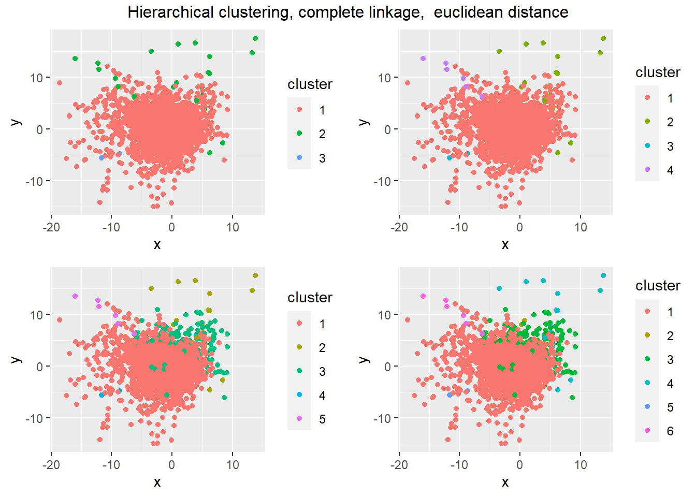
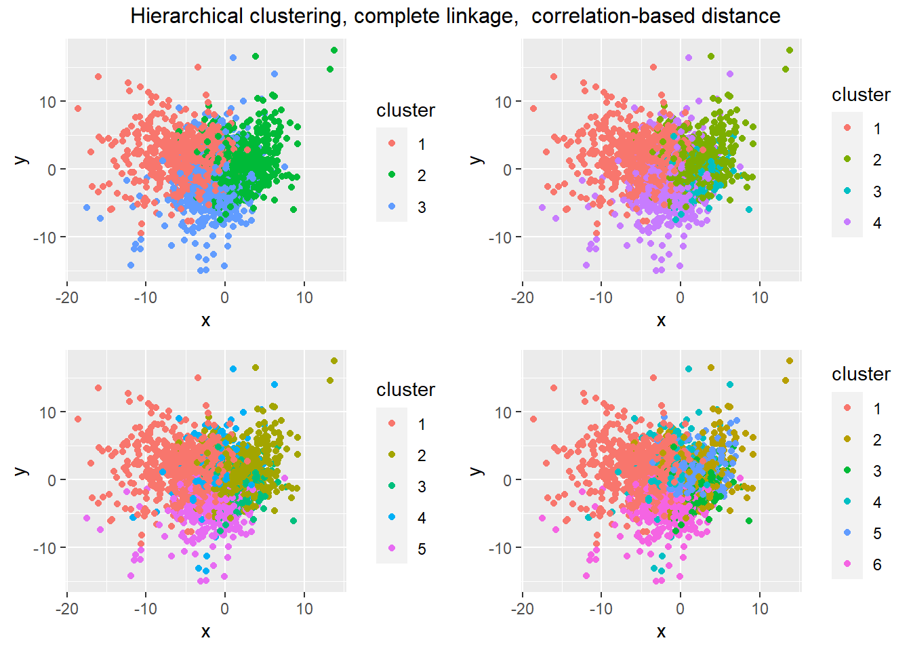
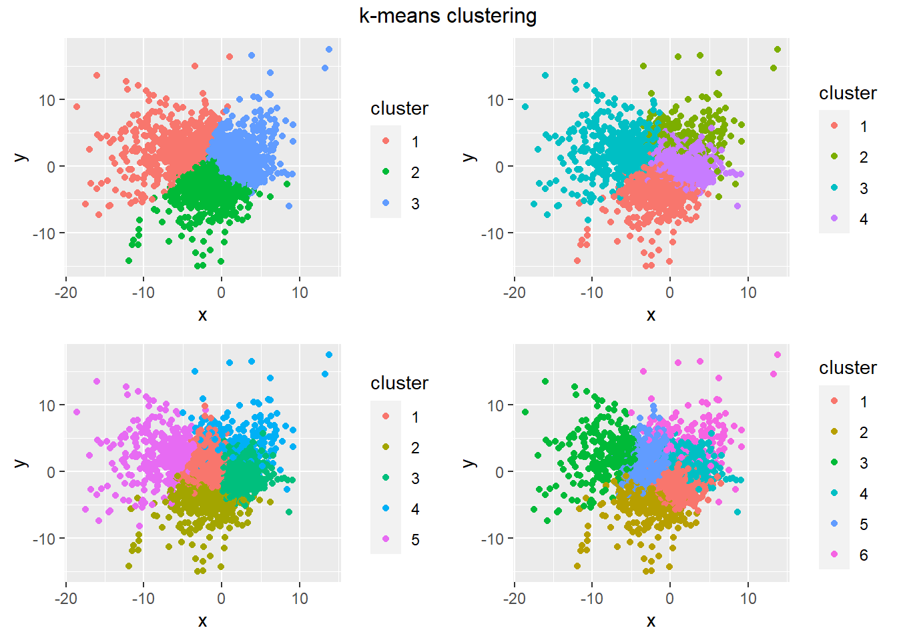

Big Data Assignment 2
Question 1: Manifold Learning
For this question I have selected the Isolet dataset from the UCI Machine Learning Repository. It contains data from 150 subject who were recorded speaking each letter of the English alphabet twice, for a total of 7,797 observations (3 observations are missing). The purpose of this dataset is to train a model to classify recordings of speech by what letter of the alphabet is being said. The data has already been split into a training set of 6,238 observations (120 subjects) and a training set of 1,559 observations (30 subjects). I will limit my analysis to the training set.
There are 617 features, the majority of the which (448) are discrete Fourier transform coefficients of different parts of the waveform corresponding to the different sonorant intervals (SON) of each letter. The other features are a variety of other wave measurements corresponding to different SON, such as zero-crossing rate, amplitude, and duration. Detailed information can be found in the paper by Fanty and Cole (1990).
This dataset provides a highly dimensional problem with which to test different dimensionality reduction techniques, with applications to the real world. Voice recognition software is becoming more widespread with voice assistants such as Alexa and Siri, which rely on models to translate voice recordings into text that it can parse.
Principal Component Analysis (PCA)
Here we have performed PCA on our training set. This is a linear technique that finds linear combinations of the original features that are uncorrelated and maximise the variance of the new principal components. As shown in Figure 1 (a), the first PC contains 19% of the variance of overall variance in our data, then 9% for the next PC. From Figure 1 (b), we can also see that cumulatively, half of the variance is explained by the first 8 PCs, although this tapers off and it isn’t until the 112th PC has been added that 90% of the overall variance in our data is explained by its principal components.


Figure 2 plots the target classes against the first two PCs of the data. Due to the large number of classes, and the number of data points plotted, I also found it useful to take a stratified sample of 20% of the data to declutter the plot as well as using the letter to identify which class each plot point is. I will also do this when analyzing the other methods in this report to make the visualisations clearer.
We do see some clusters of letters forming in Figure 2 (b). In the bottom left, “R” has been quite well isolated, which I suspect is due to it having quite a unique sound when spoken. In contrast to this, on the right hand side of Figure 2 (b), there is a mix of letters like “B”, “C”, “D”, “E”, “P”, “T”, and “Z” clustered together. These letters all share a common /iy/ sound on the end when spoken (like the “ee” in “fleece”), which explains why they have been grouped together, although it would be good to find a dimensionality reduction technique that is further able to separate them based on the different sounds made before the /iy/ sound.


Isometric Mapping (Isomap)
Next we use the Rdimtools implementation of Isomap, with \(k=10\), to reduce the training data down to two dimensions and plot the class labels against these two dimensions. This plot is shown in Figure 3.
The classes again tend to group into clusters when plotted on the reduced dimensions, with “M” and “N” found in the center of ?@fig-lle, “X”, “F”, and “S” clustered together at the bottom right, and again the big group of /iy/ sounding letters clustered together on the left hand side of the plot. However it is not clear that this is an improvement on the results we obtained with PCA in Figure 2 (b), there could however be some improvement with tuning the nearest neighbour parameter, \(k\), to trade off between preserving more local or global structure. Although it was a lot more computationally expensive to obtain the Isomap embedding compared to performing PCA, so any tuning of the \(k\) parameter would likely have to be performed on a stratified sample of the data to reduce the computation to a reasonable length of time.
Uniform Manifold Approximation and Projection (UMAP)
Next we use the umap implementation of LLE, with default settings, to reduce the training data down to two dimensions and plot the class labels against these two dimensions. This plot is shown in Figure 4.

UMAP has done a much better job at finding an embedding which reduces the dimensionality of our data while seeming to retain key information that groups letters into their own clusters or clusters of similar sounding letters. One area which it has improved on both PCA and LLE is being able to distinguish “C” and “Z”, from the other /iy/ sounding letters like “B”, “P”, “T”, which intuitively makes sense as “C” and “Z” have a similar soft sound before the /iy/, whereas “B”, “P”, “T”, etc have a more abrupt sound before the /iy/. Similarly we see distinct clusters for letter pairs with similar sounds such as (“Q”, “U”), (“K”, “J”), (“S”, “F”), and (“M”, “N”), as well as some letters grouped by themselves such as “H”, “W”, “X”, “R”, and “O”.
On this dataset, UMAP had a performance advantage over LLE, but was not as fast as PCA. Results for the execution time of each method are given in Table 1.
| Method | Time |
|---|---|
| PCA | 2.2 secs |
| Isomap | 2858.9 secs |
| UMAP | 31.8 secs |
Tuning of UMAP
Here we will demonstrate the effect that varying the value of n_neighbours has on the embedding that UMAP finds. McInnes, Healy, and Melville (2020).

Question 2: Clustering
nci.data <- NCI60$data
X <- scale(t(nci.data))
P <- prcomp(X)$x# hierarchical clustering with complete linkage and euclidean distance
dist_mat <- dist(X, method = "euclidean")
hclust_comp <- hclust(dist_mat, method = "complete")n_clust <- c(3, 4, 5, 6)
clustplot.list <- list()
# look at 3, 4, 5, and 6 clusters
for (i in 1:length(n_clust)) {
cut <- cutree(hclust_comp, k = n_clust[i])
hclust_cut <- data.frame(x = P[, 1], y = P[, 2], cluster = factor(cut))
p <- ggplot(hclust_cut, aes(x, y, color = cluster)) +
geom_point()
clustplot.list[[i]] <- p
}
grid.arrange(clustplot.list[[1]], clustplot.list[[2]], clustplot.list[[3]],
clustplot.list[[4]], ncol = 2,
top = paste("Hierarchical clustering, complete linkage, ",
"euclidean distance"))
# compute (1 - corr) of matrix of (transposed) data and convert to a dist object
#
cor_mat <- as.dist(1 - cor(t(X)))
# agglomerative clustering
hclust_cor_complete <- hclust(cor_mat, method = "complete")
clustplot_cor.list <- list()
for (i in 1:length(n_clust)) {
cor_cut <- cutree(hclust_cor_complete, k = n_clust[i])
hclust_cor_cut <- data.frame(x = P[, 1], y = P[, 2], cluster = factor(cor_cut))
p <- ggplot(hclust_cor_cut, aes(x, y, color = cluster)) +
geom_point()
clustplot_cor.list[[i]] <- p
}
grid.arrange(clustplot_cor.list[[1]], clustplot_cor.list[[2]],
clustplot_cor.list[[3]], clustplot_cor.list[[4]], ncol = 2,
top = paste("Hierarchical clustering, complete linkage, ",
"correlation-based distance"))
k_clustplot.list <- list()
for (i in 1:length(n_clust)) {
kmeans_clust <- kmeans(X, centers = n_clust[i])
kmeans_dat <- data.frame(x = P[, 1], y = P[, 2],
cluster = factor(kmeans_clust$cluster))
p <- ggplot(kmeans_dat, aes(x, y, color = cluster)) +
geom_point()
k_clustplot.list[[i]] <- p
}
grid.arrange(k_clustplot.list[[1]], k_clustplot.list[[2]],
k_clustplot.list[[3]], k_clustplot.list[[4]], ncol = 2,
top = "k-means clustering")
Question 3: Regression
set.seed(42)
# [, -1] drops the Row ID variable
credit <- Credit[, -1]
# [, -1} drops intercept term as models automatically fit intercept
X <- model.matrix(Balance ~ . * ., credit)[, -1]
y <- credit$Balance
train <- sample(1:nrow(X), nrow(X)/2)# linear regression
linear.mod <- lm(y[train] ~ X[train, ])
linear.pred <- coef(linear.mod)[1]+X[-train,] %*% coef(linear.mod)[-1]
linear.test_mse <- mean((y[-train] - linear.pred)**2)grid <- 10**seq(3, -1, length.out = 100)
thresh <- 1e-10
cv_ridge.out <- cv.glmnet(X[train, ], y[train], alpha = 0, lambda = grid,
nfolds = 10, thresh = thresh)
ridge.pred <- predict(cv_ridge.out, s = cv_ridge.out$lambda.min,
newx = X[-train, ])
ridge.test_mse <- mean((y[-train] - ridge.pred)**2)cv_lasso.out <- cv.glmnet(X[train, ], y[train], alpha = 1, lambda = grid,
nfolds = 10, thresh = thresh)
lasso.pred <- predict(cv_lasso.out, s = cv_lasso.out$lambda.min,
newx = X[-train, ])
lasso.test_mse <- mean((y[-train] - lasso.pred)**2)Including the intercept term, there are \(p=66\) predictor terms.
References
Fanty, Mark, and Ronald Cole. 1990. “Spoken Letter Recognition.” In NIPS, 3:220–26. https://doi.org/10.3115/116580.116725.
McInnes, Leland, John Healy, and James Melville. 2020. “UMAP: Uniform Manifold Approximation and Projection for Dimension Reduction.” https://arxiv.org/abs/1802.03426.